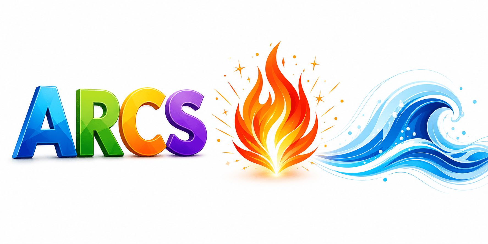
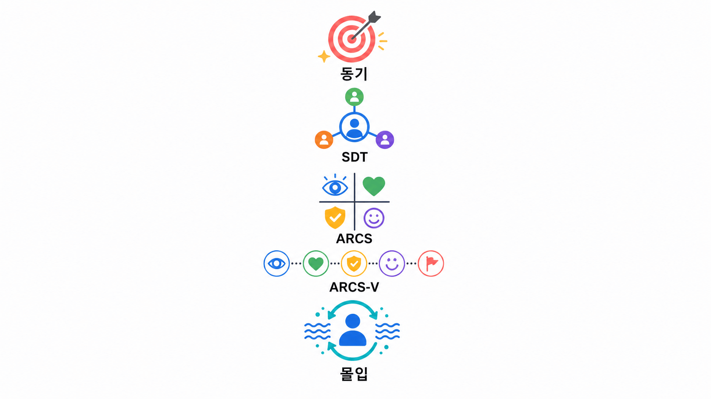
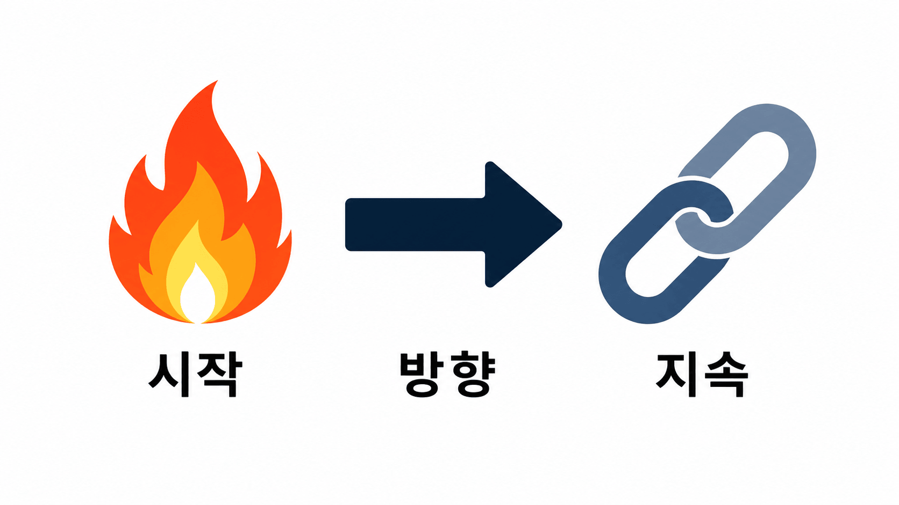
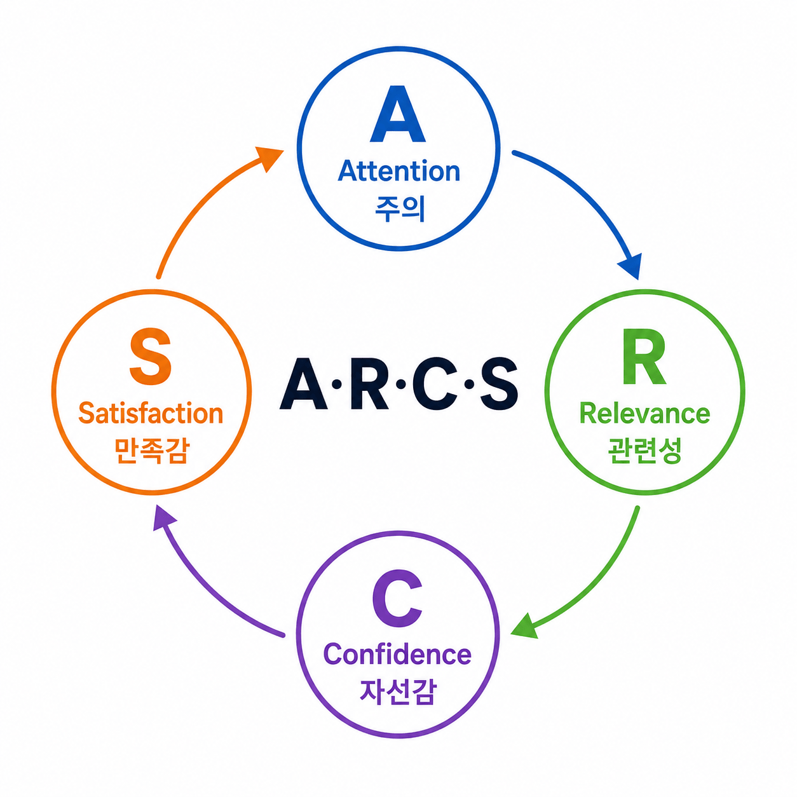
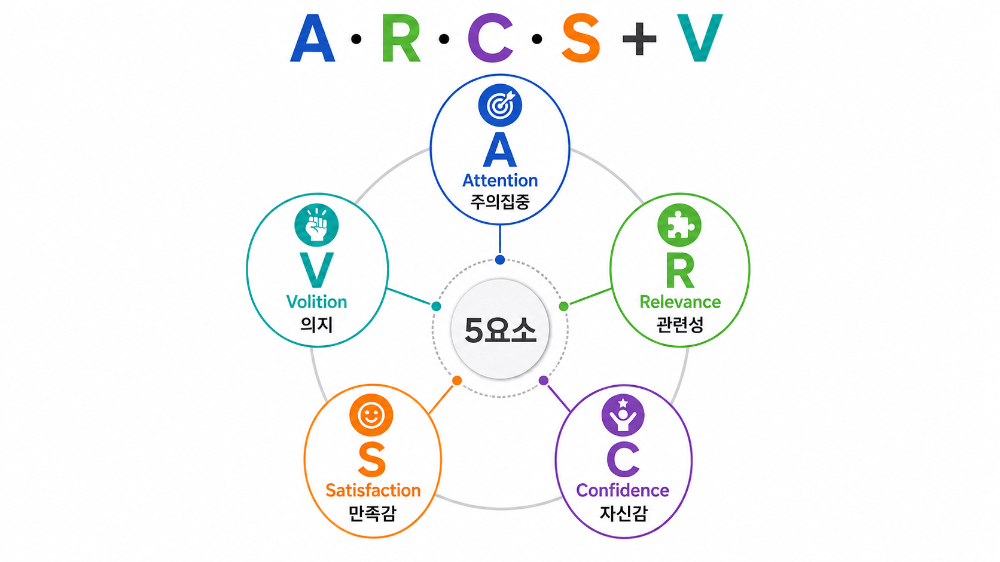
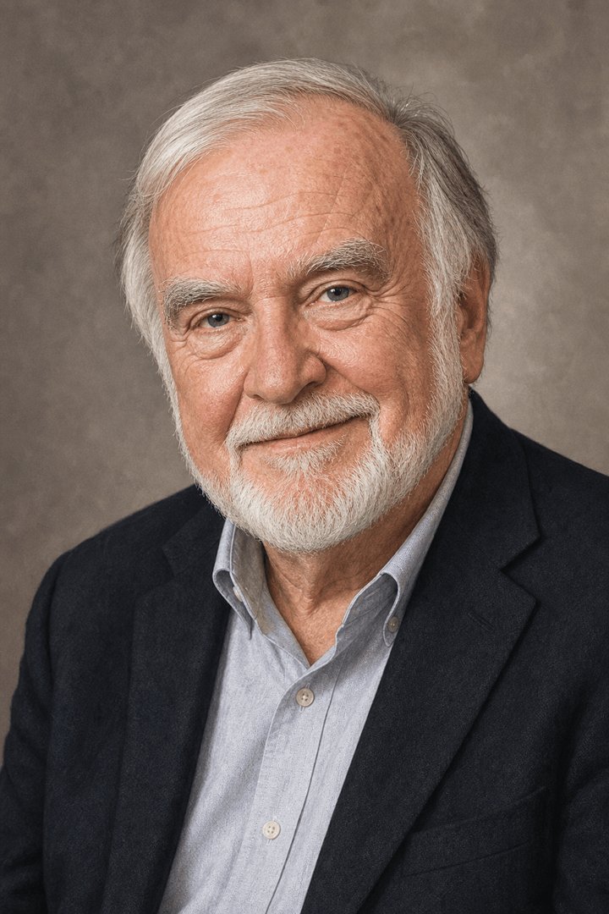
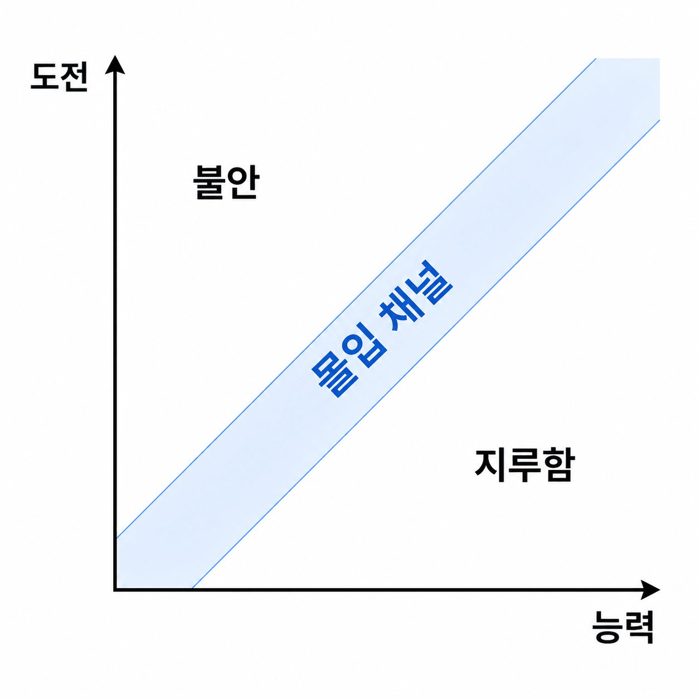

안내 질문: 동기가 수업 설계의 핵심 변수가 되는 이유는 무엇인가?
동기(Motivation): 행동을 시작(activation)하고, 방향을 이끌며(direction), 지속하게 하는(persistence) 내적 상태

안내 질문: ARCS 모형이 '처방적(prescriptive) 설계 모형'인 이유는 무엇인가?
Attention(주의집중) · Relevance(관련성) · Confidence(자신감) · Satisfaction(만족감)
네 요소는 상호 보완적 — 어느 하나의 결핍이 전체 동기를 저하시킨다

안내 질문: 관련성(R) 전략이 학습자의 발달 단계에 따라 달라져야 하는 이유는 무엇인가?
| 하위 전략 | 내용 | 수업 예시 |
|---|---|---|
| 지각적 주의 환기 | 감각적 변화로 집중 유도 | 예상치 못한 자극, 시각 자료 활용 |
| 탐구적 주의 환기 | 지적 호기심 자극 | "왜 그럴까?" 질문, 인지 갈등 제시 |
| 다양성 | 수업 방법·계열 변화 | 매체 교체, 활동 유형 전환 |
| 하위 전략 | 내용 | 수업 예시 |
|---|---|---|
| 친밀성 | 기존 경험·배경 지식과 연결 | 현재 경험, 친숙한 예문 활용 |
| 목적지향 | 목표와 수업 내용의 연결 명시 | "이것을 배우는 이유" 제시 |
| 동기 부합성 | 성취·협동·귀속 욕구 연결 | 선택권 부여, 성취감 시각화 |
| 하위 전략 | 내용 | 수업 예시 |
|---|---|---|
| 학습 필요조건 제시 | 기대치·기준 사전 투명 공개 | 평가 요소·기준 명시 |
| 성공 기회 제시 | 단순→복잡 계열화, 초기 성공 설계 | 즉각 피드백·연습 문제 |
| 개인적 조절감 | 학습 과정 통제감 부여 | 난이도 선택, 자신만의 속도 |
| 하위 전략 | 내용 | 수업 예시 |
|---|---|---|
| 내재적 강화 | 새 기술 실제 적용 기회 | 실제 문제 해결, 타인 도움 |
| 긍정적 결과 강화 | 칭찬·외적 보상 제공 | 단, 내재적 흥미 대체 금지 |
| 공정성 | 목표-평가 일치, 공정한 기준 | 수업 내용과 평가 문항 일치 |
안내 질문: ARCS-V에서 '의지(Volition)'를 별도 요소로 추가한 이유는 무엇인가?
기존 ARCS에 V(Volition, 의지) 추가 (Keller, 2010)
의지: 방해물·유혹을 억제하고 목표를 지속하는 자기조절 능력

| 단계 | 핵심 활동 |
|---|---|
| 분석 | 학습자 동기 특성 진단 → ARCS 어느 요소에서 문제인지 파악 |
| 설계 | 해당 요소 집중 전략 선택 → 수업에 통합 |
| 평가 | 동기 변화 측정 → 전략 효과 확인 및 개선 |
안내 질문: 몰입 이론과 ARCS 모형은 어떻게 보완적인 관계를 이루는가?

x축: 학습자의 능력(skill) 수준 / y축: 과제의 도전(challenge) 수준
대각선 좁은 영역 = 몰입 채널 — 두 수준이 모두 높고 균형을 이룰 때 최적 몰입

| 원칙 | 구체 방법 | 연결 이론 |
|---|---|---|
| 명확한 목표 | 수업 목표 구체 제시, 진행 파악 가능 | Gagné 9사태 ② |
| 즉각적 피드백 | 연습 즉시 피드백, 동료 피드백 구조화 | Gagné 9사태 ⑦ |
| 점진적 도전 | 능력 성장에 따라 난이도 단계적 상승 | 가녜 학습 위계(5장) |
| ZPD 연결 | 현재 수준을 약간 초과하는 도전 설계 (도전-능력 균형) | Vygotsky ZPD(3장) |
| 이론 | 핵심 접근 | 교사 실천 |
|---|---|---|
| ARCS | 처방적 — A·R·C·S 의도적 설계 | 동기 진단 후 맞춤 전략 선택 |
| SDT | 욕구 기반 — 자율·유능·관계 충족 | 선택권·성공 경험·관계 형성 |
| 몰입 이론 | 균형 기반 — 도전·능력 조율 | ZPD 수준 과제·즉각 피드백 |